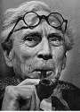
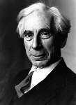

Philosophy Pages
| Dictionary | Study Guide | Logic | F A Q s | ||
|---|---|---|---|---|---|---|
| History | Timeline | Philosophers | Locke | |||
| Philosophy Pages
| Dictionary | Study Guide | Logic | F A Q s | ||
|---|---|---|---|---|---|---|
| History | Timeline | Philosophers | Locke | |||

|
Life and Works . . Mathematics . . Descriptions . . Logical Atomism . . Social Concerns Bibliography Internet Sources |
Orphaned at the age of four, Bertrand Russell studied both mathematics and philosophy (with McTaggart) at Cambridge University, where he later taught. As the grandson of a British prime minister, Russell devoted much of his public effort to matters of general social concern. He was jailed for writing a pacifist pamphlet during the First World War and attacked Bolshevism and Stalin in 1920, after visiting the Soviet Union. Russell supported the battle against Fascism during World War II but continued to protest Western colonialization and publicly deplored the development of weapons of mass destruction, as is evident in "The Bomb and Civilization" (1945), New Hopes for a Changing World (1951), and his untitled last essay.  Throughout his life, Russell was an outspoken critic of organized religion as both unfounded and deceptive; he detailed its harmful social consequences in "Why I Am Not a Christian" (1927) and defended an agnostic alternative in "A Free Man's Worship" (1903). His Marriage and Morals (1929), an attack upon the repressive character of conventional sexual morality, was a central focus in the legal action that prevented him from accepting a teaching post at the City College of New York in 1940. Russell's Autobiography (1967-69) is an excellent source of information, analysis, and self-congratulation regarding his interesting life. Its pages include his eloquent statements of "What I Have Lived For" and "A Liberal Decalogue." Russell was awarded the Nobel Prize for literature in 1950.
Through an early appreciation of the philosophical work of
Leibniz, published in A Critical Exposition of the Philosophy of Leibniz (1900), Russell came to regard logical
analysis as the crucial method for philosophy.
 In Principia Mathematica (1910-13), written jointly with
Alfred North Whitehead, he showed that all of
arithmetic could be deduced from a restricted set of logical axioms,
a thesis presented and defended in less technical terms in Russell's Introduction to Mathematical Philosophy (1919).
Applying simlarly analytical methods to philosophical problems, Russell believed, could resolve disputes and provide an adequate account of human experience.
Indeed, his A History of Western Philosophy (1946) tried to demonstrate that the philosophical tradition, properly understood, had moved slowly but steadily toward just such a culmination.
In Principia Mathematica (1910-13), written jointly with
Alfred North Whitehead, he showed that all of
arithmetic could be deduced from a restricted set of logical axioms,
a thesis presented and defended in less technical terms in Russell's Introduction to Mathematical Philosophy (1919).
Applying simlarly analytical methods to philosophical problems, Russell believed, could resolve disputes and provide an adequate account of human experience.
Indeed, his A History of Western Philosophy (1946) tried to demonstrate that the philosophical tradition, properly understood, had moved slowly but steadily toward just such a culmination.
The attempt to account clearly for every constituent of ordinary assertions soon proved problematic, however. Russell proposed a ramified theory of types in order to avoid the self-referential paradoxes that might otherwise emerge from such abstract notions as "the barber who shaves all but only those who do not shave themselves" or "the class of all classes that are not members of themselves." In the theory of descriptions put forward in On Denoting (1905), Russell argued that proper analysis of denoting phrases enables us to represent all thought symbolically while avoiding philosophical difficulties about non-existent objects.  As his essay on "Vagueness" (1923) shows, Russell long persisted in the belief that adequate explanations could provide a sound basis for human speech and thought.
In similar fashion, the analysis of statements attributing a common predicate to different subjects in "On the Relations of Universals and Particulars" (1911) convinced Russell that both particulars and universals must really exist. He developed this realistic view further in The Problems of Philosophy (1912). Our Knowledge of the External World (1914) continues this project by showing how Russell's philosophy of logical atomism can construct a world of public physical objects using private individual experiences as the atomic facts from which one could develop a complete description of the world. Although Russell's philosophical positions were soon eclipsed by those of Wittgenstein and the logical positivists, his model of the possibilities for analytic thought remains influential.
|
Recommended Reading:
Primary sources:
Secondary sources:
Additional on-line information about Russell includes:
|